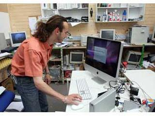

- Accueil
-
Choisir mes études
Choisir mes études
-
- Collège, mode d'emploi
- Classes du collège
- Collégiens à besoins particuliers
-
- Au lycée professionnel et au CFA
- Sections et dispositifs spécifiques
-
-
Filières d'études
- BTS/BTSA
- DUT
- Diplôme d’études universitaires scientifiques et techniques (DEUST)
- Licences générales
- Licence professionnelle
- Master
- Doctorat
- Classes prépa
- Cycles préparatoires communs
- Classes préparatoires aux études supérieures (CPES)
- Grandes écoles
- Écoles spécialisées
- Études médicales et pharmaceutiques
- Etudier en Europe
-
Filières d'études
-
-
Découvrir les métiers
-
-
-
- Stages en entreprises
- Validation des acquis
-
-
Scolarité et handicap
-
- Etudes supérieures et handicap
-
- Projets de scolarisation
- Instances d'orientation
- Handicap et vie quotidienne
-
Espace pédagogique
-
- Passeport orientation formation / webclasseur
- Accompagnement personnalisé
- Entretien personnalisé d’orientation
- Parcours de découverte des métiers et des formations (PDMF)
-
- Mobilité des équipes éducatives
- Mobilité des élèves
-
Fiche métier
technicien(ne) de maintenance en informatique
Un virus, des fichiers volatilisés, un écran noir, une imprimante bloquée... Tel est le lot quotidien du technicien de maintenance en informatique. Véritable urgentiste, il intervient pour que tout fonctionne, matériels comme logiciels.
-

© Jérôme Pallé/ONISEP
- Niveau d'accès : bac ou équivalent
- Salaire débutant : 1750 €
- Statut(s) : Statut fonctionnaire, Statut salarié
-
Synonymes :
Assistant(e) technique clientèle,
Assistant(e) utilisateur,
Technicien(ne) de maintenance en micro-informatique,
Technicien(ne) support utilisateur
-
Métiers Associés :
Technicien(ne) de police technique et scientifique de la police nationale (informatique),
Technicien(ne) supérieur(e) territorial(e) (informatique et systèmes d'information)
- Secteur(s) professionnel(s) :
- Centre(s) d'intérêt :
Le métier
Nature du travail
Faire face à toutes les pannes
Une carte-son à changer ? Un traitement de texte à transformer ? Un mail à configurer ? En qualité d'expert, le technicien de maintenance en informatique est capable d'intervenir dans des domaines distincts. Et ce avec le plus de rapidité et d'efficacité possible.
Expertiser pour mieux réparer
Lorsque des utilisateurs confrontés à un dysfonctionnement l'appellent, avant toute chose il tente d'établir un diagnostic. Pour ce faire, il pose des questions filtres (préétablies) afin d'identifier les données d'utilisation et de fonctionnement, ainsi que la configuration de la machine concernée. En général, il dispose d'une base de données qui recense les pannes les plus courantes et les moyens d'y remédier.
Intervenir tous azimuts
Selon la taille de l'entreprise, il peut assumer d'autres tâches : câbler et installer de nouveaux équipements, implanter des logiciels, former et conseiller les utilisateurs, contrôler les stocks de pièces détachées, passer les commandes et actualiser la documentation. Sans oublier que ce technicien veille au droit d'utilisation des logiciels et gère les numéros de licences.
Compétences requises
Un technicien spécialisé
Impossible de faire ce métier sans connaître à la loupe les spécificités des produits et les caractéristiques de l'environnement d'exploitation. Le technicien intervient en permanence sur des plates-formes de travail différentes (PC, mac, systèmes d'exploitation divers...). Par conséquent, être spécialisé dans l'un de ces domaines peut être un plus auprès des employeurs.
Toujours à l'affût
Ouverture d'esprit et curiosité sont des atouts que tout technicien doit posséder pour faire évoluer ses connaissances et ouvrir l'oeil sur les nouveautés technologiques de son secteur. Rigoureux et méthodique, les situations de stress et d'urgence ne lui font pas peur. À la clé, calme et organisation !
Toujours à l'écoute
Disponibilité et capacité d'écoute sont indispensables quand on doit mener son enquête pour trouver l'origine d'un problème. Et qu'on doit l'expliquer à l'utilisateur afin d'éviter toute future erreur de manipulation... Pédagogue, il s'adapte aux différents niveaux de compétences de ses interlocuteurs et sait se faire comprendre.
Où l'exercer ?
Lieux d’exercice et statuts
D'un employeur à l'autre
Employé dans le service informatique d'une entreprise ou d'une administration, ce professionnel suit les directives de l'ingénieur de maintenance, du gestionnaire de parc informatique ou du responsable micro-réseaux. Dans une société de services en ingénierie informatique (SSII), il est appelé à intervenir sur différents sites, avec de nombreux déplacements. Chez un éditeur de logiciels ou un constructeur de matériels, il effectue surtout un travail de service après-vente.
Sur le terrain et à distance
Son travail d'assistance, ce technicien peut l'effectuer directement auprès des utilisateurs de l'entreprise ou alors à distance, par téléphone ou via internet si les ordinateurs sont connectés en réseau. Dans un centre d'appels, ses interventions sont effectuées selon une méthodologie et des processus définis au préalable par la direction informatique. Autres biais pour traiter les questions les plus récurrentes : l'intranet, un forum ou une messagerie. Les horaires lourds et décalés, les périodes d'astreintes ne sont pas exclus.
Carrière et salaire
Salaire
Salaire du débutant
En moyenne 1750 euros brut par mois (source "01 Informatique")
Intégrer le marché du travail
Une forte demande
Parce qu'il y a toujours un problème lié à l'informatique à régler dans l'entreprise, le technicien de maintenance reste vraiment indispensable. Toutes les structures font donc appel à ses services. C'est en relation directe et permanente qu'il travaille avec les utilisateurs. Et ceux-ci le sollicitent fréquemment !
De nombreuses ouvertures
Avec un peu d'expérience, le technicien de maintenance en informatique peut devenir responsable d'un centre d'appels ou d'une salle des machines, ou encore chef d'exploitation. En tant que support technique, il a la possibilité de former les techniciens et de les assister dans des interventions plus ou moins délicates, voire de devenir formateur spécialisé dans un domaine particulier (telle la bureautique). Enfin, les fonctions de gestionnaire de parc micro-informatique ou de responsable micro-réseaux sont pour lui à portée de main.
Accès au métier
Accès au métier
Du bac pro à bac + 2
Les formations au métier de technicien de maintenance en informatique sont accessibles après la 3e ou après le bac. À l'heure actuelle, les entreprises donnent souvent la préférence aux diplômés de niveau bac + 2. Dans les deux cas, la maîtrise d'un anglais technique est requise.
- En trois ans après la 3e , le bac pro SEN spécilaité télécommunications et réseaux est une première entrée possible.
- Après le bac, cap sur un BTS ou un DUT dans les domaines de l'informatique, des réseaux, de la maintenance industrielle, etc. Entre autres, on peut citer : le BTS informatique de gestion, option développeur d'applications ou option administrateur de réseaux locaux d'entreprise ; les BTS systèmes électroniques et IRIST (réseaux) ; le DUT informatique ; le DUT réseaux et télécommunication... Par ailleurs, certains DEUST répondent parfaitement aux attentes des recruteurs. C'est le cas par exemple du DEUST assistant micro réseaux et logiciels de Paris 11. BTS, DUT et DEUST se préparent en deux ans après le bac.
Exemple de formations
Jusqu’au Bac
bac ou équivalent
- bac pro Systèmes électroniques numériques
- Maintenicien en micro-informatique et réseau Technicien de maintenance micro-informatique
- Technicien de maintenance en micro-informatique
Après BAC
bac + 2
- BTS Informatique de gestion option A développeur d'applications
- BTS Informatique de gestion option B administrateur de réseaux locaux d'entreprise
- BTS Informatique et réseaux pour l'industrie et les services techniques
- BTS Systèmes électroniques
- DEUST Assistant micro-réseaux-logiciel
- DUT Génie électrique et informatique industrielle
- DUT Informatique
- DUT Réseaux et télécommunications
- Gestionnaire en maintenance et support informatique
- Technicien conseil en réseaux et télécommunications
bac + 3
- licence pro gestion de la production industrielle spécialité chargé d'affaires en gestion de production industrielle
- licence pro réseaux et télécommunications spécialité administration et développement de sites internet
- licence pro systèmes informatiques et logiciels spécialité génie logiciel base de données réparties
En savoir plus
Témoignages
Pascal, technicien support
Aux quatre coins de la France
"Je suis le monsieur SOS du service support technique national. Après l'installation d'un central, j'interviens pour gérer les problèmes de programmation, mais aussi pour apporter de nouvelles fonctionnalités dont le client a besoin. Selon les affaires traitées, je peux être en déplacement pendant trois semaines consécutives : Lille, Marseille, Bordeaux... Même, parfois, à l'étranger. Avancer à cent à l'heure, être en perpétuelle évolution, avec en plus l'idée de toujours apprendre, cela me convient bien."
(31/01/2007)Ressources utiles
Syntec Informatique, chambre syndicale des sociétés de services et d'ingénierie en informatique
http://www.syntec-informatique.fr
FIEEC - Fédération des industries électriques, électroniques et de communication
http://www.fieec.fr
Site internet de 01 Informatique
Site internet du Monde informatique
Site d'information sur les métiers de l'informatique
Publications
Publications Onisep
Les métiers de l'informatique
collection Parcours, Onisep
parution 2008
1 - Recherche géolocalisée
Quoi ? Où ?
2 - Recherche par d'autres critères
- Copyright ONISEP © 2010 -
- Qui sommes-nous ? -
- Infos légales -
- Nous contacter -
- Marchés publics -
- Concours ITRF -
- Relations presse -
- Publicité -
- Accueil
Plan du site
Les sites de l'ONISEP
L'Onisep est référencé par le moteur de recherche de l'éducation